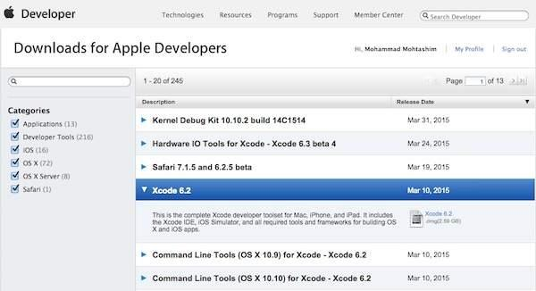
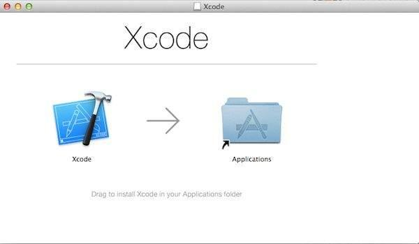
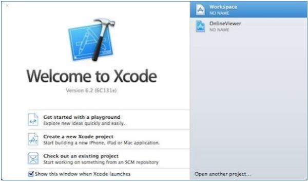
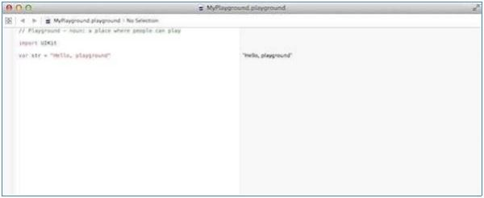

Swift provides a Playground platform for learning purpose and we are going to setup the same. You need xCode software to start your Swift coding in Playground. Once you are comfortable with the concepts of Swift, you can use xCode IDE for iSO/OS x application development.
To start with, we consider you already have an account at Apple Developer website. Once you are logged in, go to the following link − Download for Apple Developers
This will list down a number of software available as follows −

Now select xCode and download it by clicking on the given link near to disc image. After downloading the dmg file, you can install it by simply double-clicking on it and following the given instructions. Finally, follow the given instructions and drop xCode icon into the Application folder.

Now you have xCode installed on your machine. Next, open Xcode from the Application folder and proceed after accepting the terms and conditions. If everything is fine, you will get the following screen −

Select Get started with a playground option and enter a name for playground and select iOS as platform. Finally, you will get the Playground window as follows −

Following is the code taken from the default Swift Playground Window.
import UIKit var str = "Hello, playground"
If you create the same program for OS X program, then it will include import Cocoa and the program will look like as follows −
import Cocoa var str = "Hello, playground"
When the above program gets loaded, it should display the following result in Playground result area (Right Hand Side).
Hello, playground
Congratulations, you have your Swift programming environment ready